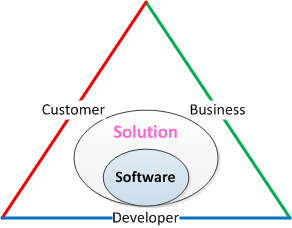

The Oath Triangle
Disclaimer
This article is my personal opinion about the moral virtues that shall underpin commercial software development to ensure healthy cooperation, but I am not an ethics philosopher, and I may be totally wrong.
This article builds on the previous one "Software Development as a Research in Domain of Value" which I recommend reading first.
“Any fool can know. The point is to understand.”
―Albert Einstein
Introduction
Software development includes three parties: a customer, a business and a developer, who work together to satisfy one another’s needs with a software solution. Just as marriage starts with a vow, so the software solution development should start with an oath made by each stakeholder to the others. A list of oaths to be taken by the developer, business and customer have been given. It is left to the reader to find out how the presented oaths lead to satisfaction of stakeholders’ needs.
And They Lived Happily Ever After…
Willard H. Harley Jr. defines marriage as a contract giving each spouse the exclusive rights to satisfy the other one’s needs. In some cultures, this is explicitly stated by marriage vow, in some not. Nevertheless, every spouse has his or her basic needs that need to be satisfied for the relationship to last.
Employment is like marriage. Maybe not exactly, but it is a prolonged emotional relationship between employee and employer. Happy employees identify with the company and collaboratively work for its success. A successful company cares for its employees recognizing them as the source of its success. But unlike marriage, software development includes three parties: a customer, a business and a developer, who work together to satisfy one another’s needs with a software solution.

Just as marriage starts with a vow, so the software solution development should start with an oath made by each stakeholder to the others.
The Developer’s Oath (by Robert C. Martin)
I promise that to the best of my ability and judgment:
- I will not produce harmful code.
- The code that I produce will always be my best work. I will not knowingly allow code that is defective either in behavior or structure to accumulate.
- I will produce, with each release, a quick, sure, and repeatable proof that every element of the code works as it should.
- I will make frequent, small releases so that I do not impede the progress of others. – to satisfy the need of flexibility.
- I will fearlessly and relentlessly improve my creations at every opportunity. I will never degrade them.
- I will do all that I can to keep the productivity of myself, and others, as high as possible. I will do nothing that decreases that productivity.
- I will continuously ensure that others can cover for me and that I can cover for them.
- I will produce estimates that are honest both in magnitude and precision. I will not make promises without certainty.
- I will never stop learning and improving my craft.
- I will actively search for opportunities to create balanced value for business, customers and me.
The Business Oath
I promise that to the best of my ability and judgment:
- I will treat programmers with respect as my partners working with me towards a common goal.
- I will communicate the goals clearly and provide all the information required to perform productive work.
- I will listen to, and utilize constructive criticism form programmers.
- I will not force programmers to take immoral actions.
- I will encourage programmers to constantly learn and improve their craft for mutual good.
- I will not tolerate bad programmers.
- I will not impose artificial and unreasonable deadlines and requirements upon programmers.
- I will reward programmers proportionally to the provided value.
- I will not make unreasonable promises to customers.
- I will not parasitize my customers by using obscurity, noncompliance to standards, data captive or any other means.
- I will run the business to generate value and not only profit.
The Customer Oath
I promise that to the best of my ability and judgment:
- I will treat my software vendor as my business partner working with me towards a common goal.
- I will communicate my needs fully and clearly and provide all the information required to perform productive work.
- I will listen to, and utilize constructive criticism from my software vendor.
- I will not force my software vendor to take immoral actions.
- I will not force unreasonable demands over my software vendor.
- I will reward my software vendor proportionally to the provided value.
But Why…
The reason for any human endeavor is to satisfy existing needs. Since marriage and work occupy a central position in most people’s’ lives, they both need a set of rules that are voluntarily accepted and followed for mutual good. I leave to the reader the exercise of finding out how the presented oaths lead to satisfaction of stakeholders’ needs.